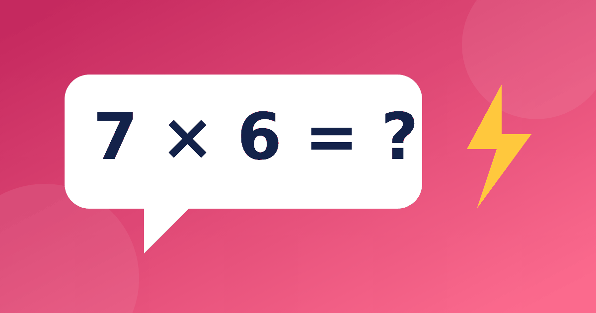

Пятиминутка с умножением: как проводить счёт дома

Школьный устный счет 3 класс обычно держится на таблице умножения и деления, и дома его легко превратить в короткую ежедневную привычку. Пять спокойных минут приносят больше пользы, чем час раз в неделю перед контрольной. Ниже идеи, как организовать такую разминку без давления и долгой подготовки.
Что входит в хорошую пятиминутку
Разминка не должна состоять из одного вида заданий. Лучше взять три или четыре небольших блока и менять их день ото дня. Тогда ребёнку не скучно, а вы видите, где именно возникают заминки. Когда родители ищут «устный счёт умножение», им обычно нужен готовый набор простых заданий, поэтому ниже собран именно такой набор, который можно брать и использовать сразу.
Время для разминки выбирайте так, чтобы оно не конкурировало с любимыми делами ребёнка. Подойдёт дорога в школу, ожидание ужина или десять минут перед сном. Привязка к привычному моменту работает лучше, чем напоминания, ведь занятие становится частью дня, а не отдельным событием, которого ребёнок ждёт с тревогой.
Упражнения для устного счёта на каждый день
- Счёт через несколько чисел. Считаем тройками до 30 и обратно, потом четвёрками до 40.
- Пропущенное число. Например, 8 × _ = 56 или _ × 6 = 42. Ответы семь и семь.
- Цепочка действий. Умножить 3 на 4, прибавить 8, разделить на 5. Получится четыре.
- Удвоение и половина. Удвоить 14 выйдет 28, а половина от 50 это 25.
- Маленькая задача. В четырёх пакетах по шесть яблок, сколько всего? Двадцать четыре.
Каждое задание занимает минуту или две. Если ребёнок ответил быстро, предложите число побольше, если задумался, вернитесь к более простому варианту.
Примеры для разминки на выбор
Если нет времени придумывать задания, возьмите готовые наборы. Читайте их вслух по одному и ждите ответа.
- 7 × 3, 9 × 4, 6 × 6. Ответы 21, 36 и 36
- 45 разделить на 5, 63 разделить на 9, 48 разделить на 6. Ответы 9, 7 и 8
- 25 × 2, 15 × 2, 35 × 2. Ответы 50, 30 и 70
- 30 × 3, 20 × 4, 60 × 2. Ответы 90, 80 и 120
Деление в таких наборах не случайно: оно проверяет те же знания с другой стороны. Как связаны эти действия, объяснено в статье про деление как обратное умножение. Через несколько дней меняйте числа, но сохраняйте тот же формат, чтобы ребёнок успевал привыкнуть.
Хорошо работает и обмен ролями. Пусть ребёнок сам придумает вам три примера, а вы нарочно ошибётесь в одном из ответов. Найти ошибку взрослого для многих детей настоящая радость, а заодно это отличная проверка знаний.
Три приёма, которые ускоряют счёт
Первый приём называется разбиением. Чтобы найти 12 × 4, берём 10 × 4 = 40 и 2 × 4 = 8, складываем и получаем 48. Второй приём это округление. Для 19 × 3 удобнее взять 20 × 3 = 60 и вычесть 3, получится 57. Третий приём связан с удвоением. Чтобы найти 6 × 8, найдите 3 × 8 = 24 и удвойте, выйдет 48. На удвоении держится и таблица умножения на 4, ведь четыре это дважды два.
Показывайте приём один раз, на живом примере, а дальше пусть ребёнок выбирает сам, как ему удобнее. Один считает через десяток, другой через удвоение, и оба способа хороши.
Схема на неделю
Вот пример того, как можно разложить занятия. Подстраивайте его под свой распорядок.
- Понедельник — счёт тройками и четвёрками, пара примеров на пропущенное число
- Вторник — удвоение и половина, разбиение двузначных чисел
- Среда — цепочки действий
- Четверг — маленькие задачи устно
- Пятница — любимое задание, которое выберет сам ребёнок
В выходные можно отдохнуть или сыграть в игру с таблицей умножения, чтобы не терять интерес.
Как не превратить счёт в мучение
Дайте ребёнку время подумать и не подсказывайте сразу. Ошибку лучше разобрать вслух вместе, чем просто поправить. Секундомер не нужен: скорость приходит сама, когда ответы становятся привычными. Если табличные случаи пока вызывают затруднение, подключите тренажёр «Таблица без зубрёжки». Часть его бесплатна, на вопросах нет таймеров и рекламы, поэтому ребёнок спокойно вспоминает ответ. О том, сколько времени отводить на занятия, написано в статье про время занятий в день. А если хочется разнообразия, загляните в карточки для таблицы.
Если ребёнок отказывается, не настаивайте. Сделайте паузу на день или два, а потом вернитесь в игровой форме, например превратите задания в соревнование «ребёнок против родителя», где взрослый иногда ошибается. Главное не добиться идеального результата за неделю, а сохранить у ребёнка желание считать.